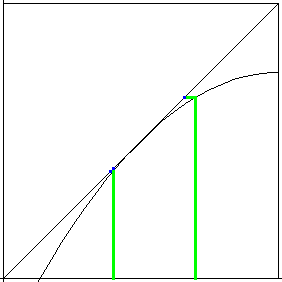

| A fixed point is indifferent if some nearby points iterate toward the fixed point and other nearby points iterate away from the fixed point, or if they do not move at all. |
|  |
| Click the animation to stop. |
| If a fixed point is indifferent, at the fixed point the tangent line to the graph has slope +1. |
| However, merely having slope +1 does not guarantee a fixed point is indifferent. |
| Some stable fixed points have tangents with slope +1; some unstable fixed points have tangents with slope +1. Which behavior occurs can be determined by graphical iteration. |
Return to Fixed Points.